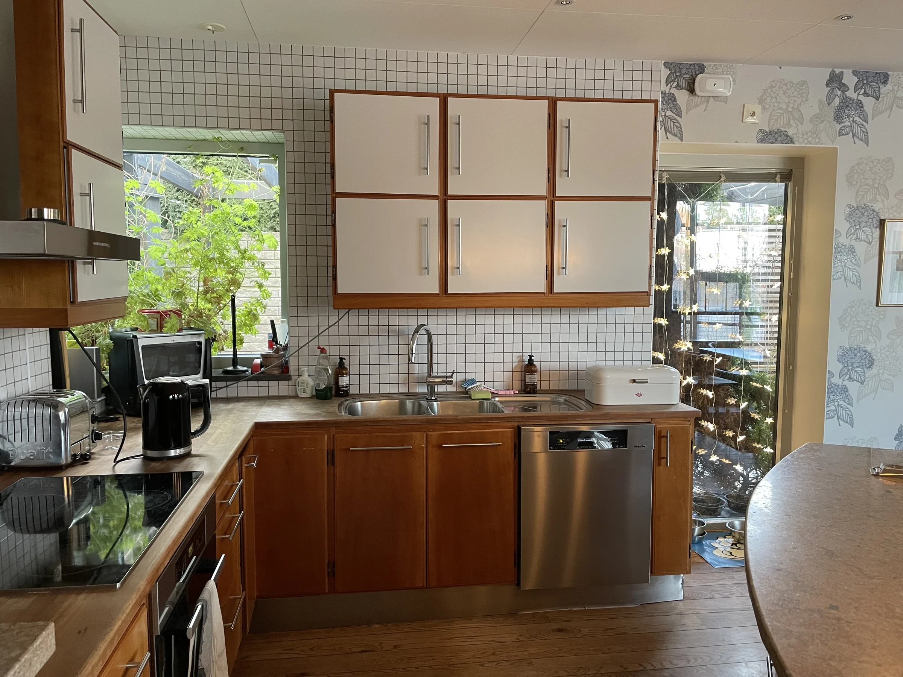
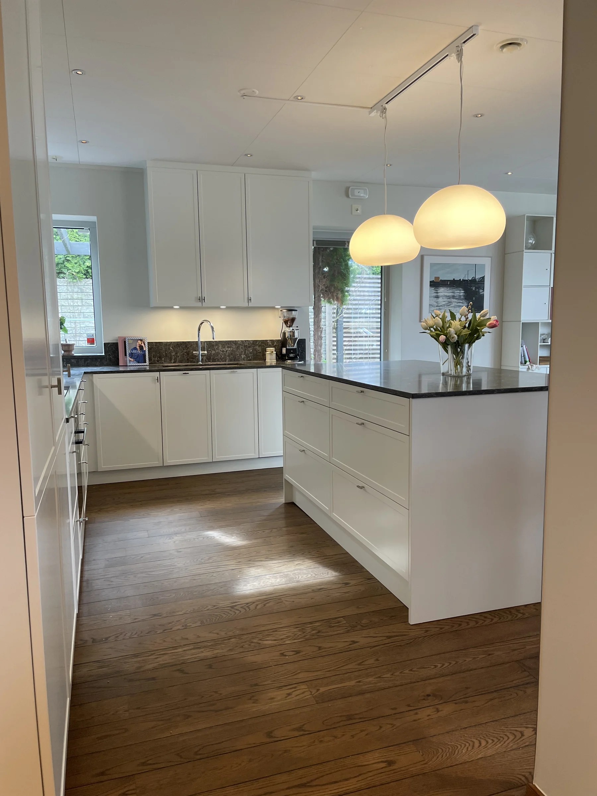
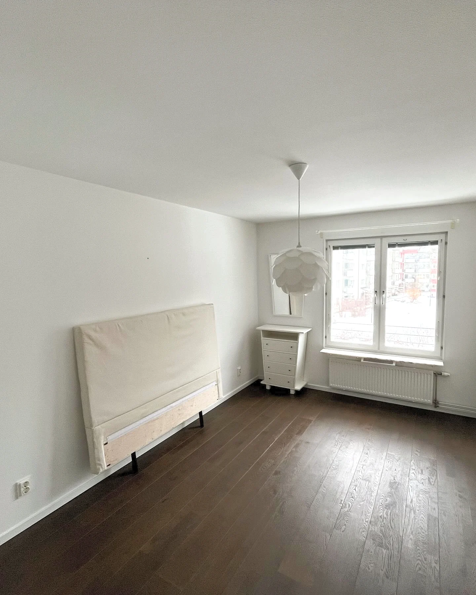
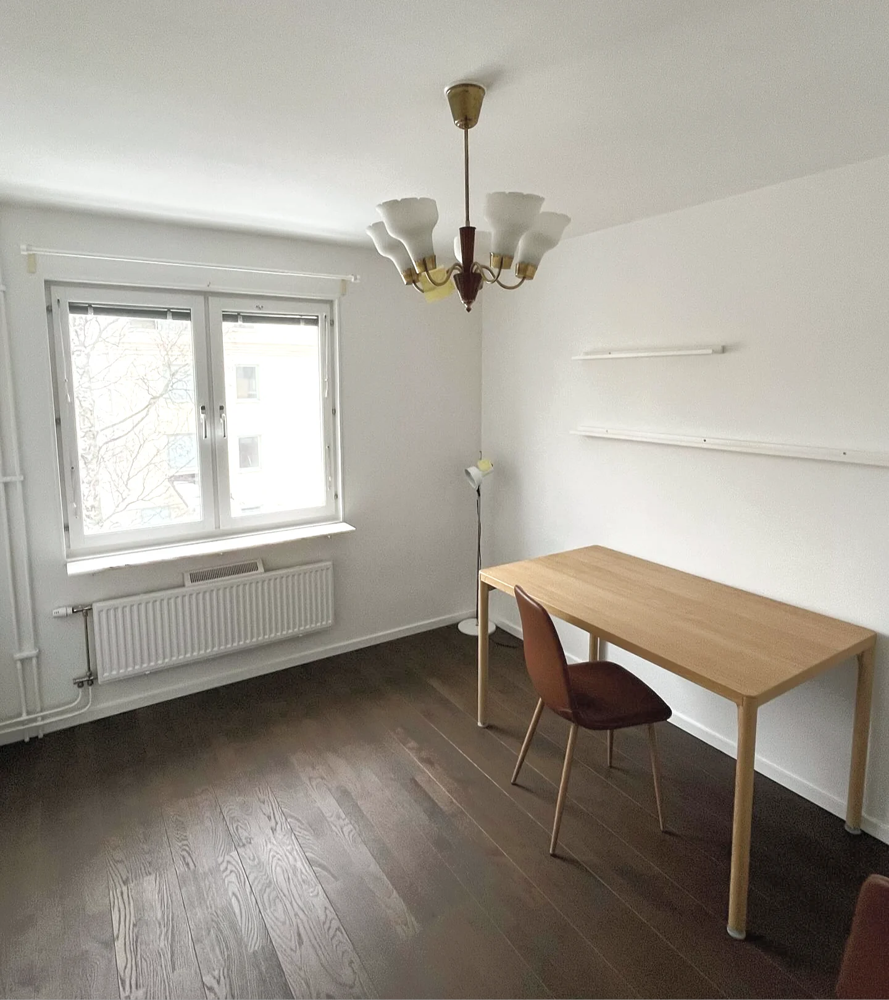

Rum, material
och möjligheter.
Ett urval av våra arbeten. Hitta en känsla att ta med till ditt eget projekt.
Bodarna, Uppsala
Ny planlösning och köksinredning från Binova i en helrenovering av köket.
Gottsundagipen, Uppsala
Pigmenterade golv, ny möblering, belysning och måttsydda gardiner gav rummet ett öppnare flöde.
Östermalm, Stockholm
En sammanhållen färg- och textilpalett, med gardiner, mattor och kompletterande möbler.
Svartbäcken, Uppsala
Övervåningen fick ny rumsfördelning och mer avskilda sovrum.
Övre Slotts, Uppsala
Kök från Kvänum i äldre stil, med kundens befintliga stenskivor bevarade.
Luthagen, Uppsala
Ett svårmöblerat rum öppnades upp till ett dressingroom med inredning från Lema.
Omegapoint, Uppsala
Ett växande kontor fick fler våningsplan och flexibla miljöer för kundmöten och after work. Uppdraget omfattade golv, kök, kulörer och detaljer.
Länsförsäkringars Fastighetsförmedling
Ett tidigare bankvalv blev konferensrum. Belysning och material skapar djup i rummet utan fönster.
Salong Syster & Bror
En tydligare identitet och mer färg, med inspiration från Wes Andersons The Royal Tenenbaums.
Upplands Specialistläkarmottagning
Färg och mjuka gardiner gav väntrum och mottagningsrum mer trivsel och diskretion.
Värmlands nation, Uppsala
Dubbelsidiga sammetsdraperier och kraftiga skenor för puben och matsalen.
Sunnersta, Uppsala
Skira gardiner mjukar upp ljuset och förbättrar insyn, ljudmiljö och rumskänsla.
Gottsundagipen, Uppsala
En speciallösning för fem meters takhöjd och ett välvt, nio meter brett fönsterparti.
Fålhagen, Uppsala
Sänggavel i sammet från Romo, mörkläggande gardiner och kuddar från bland andra Black Edition.
Skrivbordshörna i Svartbäcken
Ett kompakt skrivbord i askfanér med specialanpassad förvaring för barnrummet.
Våningssäng i Fålhagen
Ett litet rum fick plats för övernattande kompisar. Våningssängen i MDF har förvaringslådor undertill.
Bokhylla i Svartbäcken
Förvaringen följer väggen och dörröppningen, med plats för böcker och personliga föremål.
Helstyling av sovrum
En tom bostad möbleras för fotografering och visning.
Delstyling av vardagsrum
Textilier, konst och detaljer kompletterar kundens möbler.
Delstyling av arbetsrum
Befintlig möblering får en mer ombonad inramning.
Vardagsrum med stora fönster
Mötesrum bakom glas
Textilier och detaljer
Kök och köksö
Kulör- och materialprover
Detalj från köksinredning
Miljö på Omegapoint
En välkomnande hall
Mönstrad gardin
Ljus och textilier i vardagsrummet
Konferensrum i Uppsala
Platsbyggd bokhylla
Matplats och platsbyggd förvaring
Ett inredningsförslag på papper
Ritning för platsbyggd inredning
Ljus genom skira gardiner
Förändringen
i fokus.
Före och efter, från våra uppdrag.


FöreEfter
FöreEfter
FöreEfterVad vill du förändra?
Ett rum, ett hem eller en helt ny arbetsplats.
Berätta vad du har i tankarna.